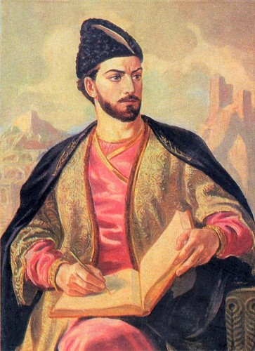
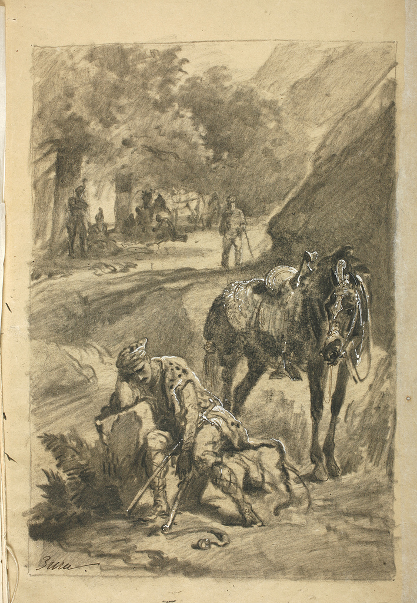
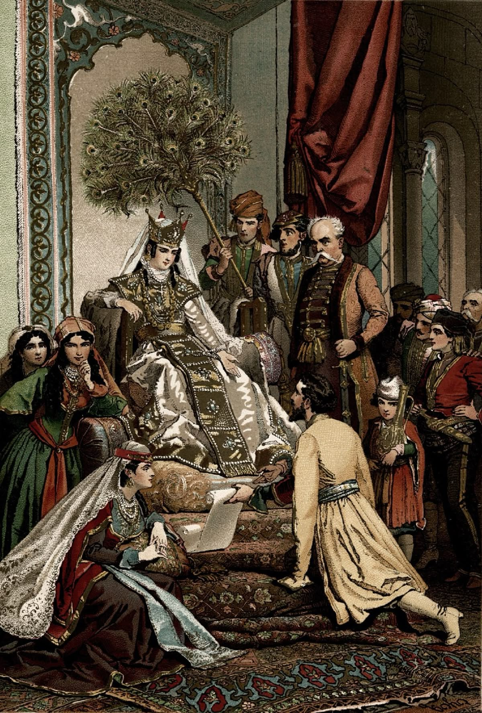

The Knight in the Panther’s Skin
1. He who created Heaven and Earth out of his power and might
Inspired every earthly being with His Holy Spirit bright;
Then reigning over the colorful earth became our human right,
And in our rulers’ faces we could see His image in plain sight.
2. Come sit beside me, listeners—let’s not allow our tears to cease,
Come weep for Tariel, a man whose greatness was beyond increase.
I, Rustaveli, wrote this poem - a man whom fate would not release.
Out of a tale, I made a poem, a sparkling diamond centerpiece.
3. An ancient Persian tale I took, and in the Georgian tongue retold.
Until that time, it was an unset pearl; from hand to hand it rolled.
But I transformed it for the one who is so beautiful and bold.
To the one who ravished my reason, I have brought poetic gold.
4. Once there ruled in Arabia, Rostevan, a king by God’s grace.
Thriving, majestic, generous, modest though in the highest place.
Rostevan had a daughter, Tinatin, to the world a shining light.
Like unto the stars she was, or a moon that makes the heavens bright.
5. Avtandil was a general, the commander-in-chief’s own son.
Tall and slim as a cypress was he - his presence, the moon and sun.
His visage was as pure as the clearest crystal; beard he had none.
By Tinatin’s luxurious lashes, he found himself undone.

In Arabia, King Rostevan has handed the throne to his daughter, Tinatin. Avtandil, a young commander who loves her, accompanies the king on a hunt. There they encounter a mysterious knight wearing a panther’s skin. The following three scenes describe their first meeting with him.
The Weeping Knight
They saw a knight seated beside a stream, weeping bitterly. He held a black horse by its reins, and his saddle and bridle shone with pearls. Strong and noble in appearance, he seemed a warrior without equal. Yet his head was bowed, and tears flowed freely down his face.
He wore a panther’s skin over his long coat, with a cap of the same fur upon his head. In his hand he held a heavy whip. The king and Avtandil watched him in wonder, unable to understand what sorrow could overcome so mighty a knight.
The king sent a servant to summon him. At first, the servant stood silently, afraid to disturb the grieving Knight. At last he gathered his courage and spoke gently: “The king wishes you to come before him.”
But the knight gave no answer. Lost in his sorrow, he seemed to hear neither the servant’s voice nor the soldiers calling from afar. His tears continued to fall, as though the world around him had faded away.
Once more the servant delivered the king’s message. Still the stranger neither spoke nor raised his head. Unable to reach him, the servant returned to the king.
“I gave him your message,” he said, “but he seemed not to hear me. His appearance filled me with wonder, and his grief troubled my heart. Though I stayed beside him and called again, he answered not a word.”

The King’s Command
Great was the king’s wonder when the servant returned, but soon his wonder turned to anger. He could not understand why the Knight gave no answer. Calling twelve armed men before him, he commanded: “Go to that knight and bring him here.”
The men approached, their armour clattering as they drew near. At last the Knight raised his head and saw them gathered around him. His sorrow only deepened. “Woe is me!” he cried, and spoke no further word.
He wiped the tears from his eyes, fastened his sword and quiver, and mounted his black horse. Without answering the king’s summons, he turned to leave.
But the men reached out to seize him. Then the grieving knight revealed his terrible strength. He struck those who blocked his path, casting one against another. With his heavy whip he drove them back; some fell wounded, and others were slain.
The king shouted for his men to stop the stranger. Yet the knight rode onward, turning only when his pursuers came too close. No one could hold him. Rostevan watched in anger and dismay as his warriors fell before the mysterious rider.
Gone Without a Trace
Avtandil and the king mounted their horses and followed the stranger. Ahead of them, the knight rode proudly across the sunlit field, his black horse swift and strong. Then he saw that the king himself was pursuing him.
He urged his horse onward with his whip, and in a moment he vanished from their sight. It seemed as though the earth had swallowed him, or the heavens had carried him away. They searched the ground for hoofprints, but found no trace of where he had gone.
The king and his men stood bewildered. No one could explain how the stranger had escaped so completely. Around them, the soldiers tended to the wounded and mourned those who had fallen. What had begun as a joyful hunt had ended in grief.
Rostevan’s anger gave way to sorrow. He felt that the happiness he had long enjoyed had been taken from him. Neither his power nor his warriors had helped him discover who the knight was, or what sorrow had brought him to the stream.
The hunt was abandoned, and the company returned home in sadness. The king withdrew to his chamber, where Avtandil alone remained beside him. Throughout the palace, the music and laughter fell silent.

Behind the Story
The Knight's sorrow is explained later in the poem. His name is Tariel, and he mourns his separation from Nestan-Darejan, the woman he loves. She has been carried away, and he has been unable to find her. In time, Avtandil will become his devoted friend and help him search for her. Their meeting beside the stream begins a greater story of love, loyalty, and courage.
Shota Rustaveli wrote The Knight in the Panther’s Skin around the late twelfth or early thirteenth century, during Georgia’s Golden Age. He dedicated the poem to Queen Tamar, praising her in its opening verses. Main reason he wrote this poem was he was in love with Queen Tamar, but he didn't had courage to tell her so he wrote 500 page poem about Knight who is in love with women and fights for her life.